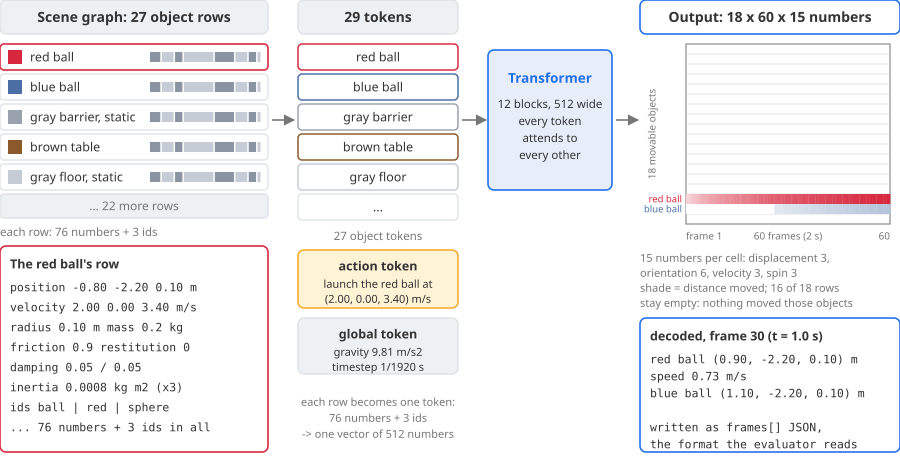
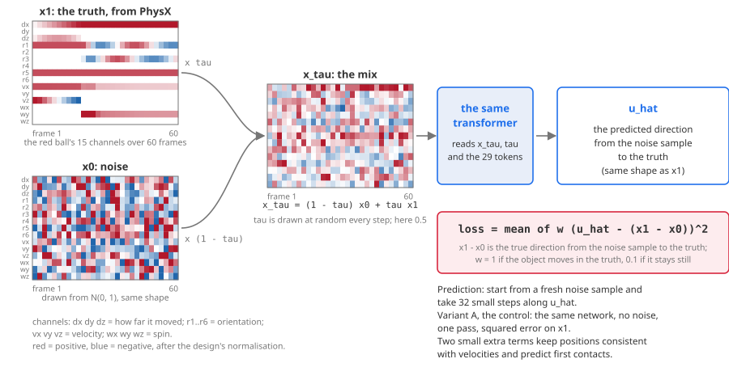
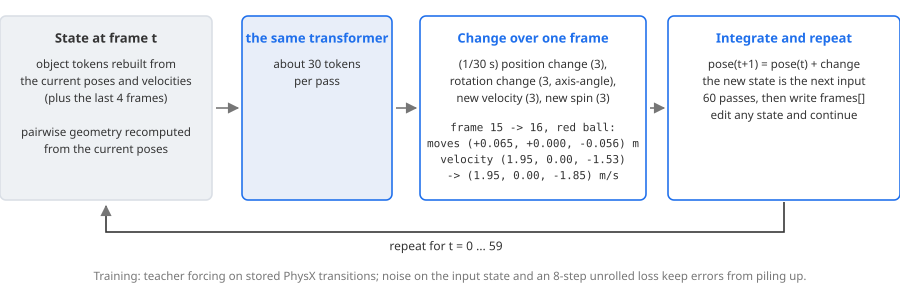

A physics engine such as NVIDIA PhysX tells you exactly how objects will fall, slide, bounce and collide, but only
after someone has rebuilt the scene in 3D with every object's shape, mass and friction, and it computes the motion step by step:
two seconds of motion in a furnished room take it about six seconds. Language models read scenes and instructions fluently, yet
have no dependable sense of what will physically happen.
This project builds models that predict motion directly from a description of the scene, in milliseconds and
with "what if" questions built in. Along the way it measures how well today's language models reason about physics, teaches open
language models with the simulator as their teacher, and works toward real scenes captured with a camera.
working todaynextclick a box to open its tab
Simulation dataset
Furnished rooms simulated in NVIDIA Isaac Sim with PhysX: chairs, tables, cups, balls and boxes, each with a mass, a friction
and a bounciness. Every task pairs a room with an instruction and a reference action the simulator has verified, and random
actions measure how hard it is. Fourteen hand-built rooms with over 500 tasks, and close to a thousand generated scenes with
over 300,000 simulated rollouts.
rigid objectsnext: cloth and soft bodiesnext: springs and pendulums
GPT-5.4 and the open Qwen3-VL-30B receive a room as data, two pictures and an instruction such as "toss the red ball over the
barrier into the box", and answer once with new poses or a launch velocity. PhysX executes the answer exactly as given.
GPT-5.4 meets the goal in about nine single-object tasks out of ten but in fewer than half of the tasks that move several
objects at once; the open model in about a third of the single-object tasks.
A network trained on the simulator's own rollouts. It reads the scene graph (one token per object: shape, pose, mass,
friction, velocity) and an action, and predicts every object's motion over the next two seconds, intermediate states included,
in milliseconds. "What if" questions become edits of the input: remove an object, add one between two others, set gravity to
the Moon's, lower a friction.
design and first small runsnext: training at scale
Open language models that anyone can run lag far behind GPT-5.4. Instead of human labels, the simulator becomes the teacher:
the model proposes several answers, each is checked in simulation, and small adapters are trained toward the answers that
worked. In the first run, GRPO lifted the 7B model from 6 to 25 of 48 held-out tasks, level with the 30B model on the same
tasks; whether that carries over to new kinds of tasks is the next test.
first run donenext: new task typesnext: world model as the judge
Simulating a real scene today means rebuilding it as a digital twin: outline every object in photographs, complete its 3D
shape, give it a collision body, a mass and a friction, and load it into PhysX. We did this for a kitchen counter. The aim is
to skip the rebuild: read a scene graph from the photographs, let the world model predict the motion, and show it in the real
images.
one real scene in PhysXnext: world model on real scenes
The whole loop, end to end: language models design scenes and write tasks, PhysX keeps the valid ones, language models judge
outcomes and propose actions, and learned simulators preview each action before PhysX decides. The scaled study repeats this
on close to a thousand scenes, including scenes converted from the Kubric MOVi and Physion datasets.
New here? Results shows what language models can and cannot do with physics today;
World model shows where the project is going.
Visitors
Page views of this page, today and since the counter started on 14 October 2026, counted by hits.sh (one count
per page load, no cookies).
World model: scene-graph flow matching
Why learn the simulator?
A physics engine such as PhysX computes motion step by step from exact 3D geometry. It is accurate, but it needs a hand-built
3D scene, and two seconds of motion in a furnished room take it about six seconds. A world model is a neural network trained on
the engine's own rollouts that predicts the same motion in one pass: the position, orientation and velocity of every object at
every frame, intermediate states included, in milliseconds.
Because the scene and its physics are explicit inputs, a counterfactual question is an edited input and one more prediction.
What if this chair were removed? What if a box stood between the two balls, gravity were the Moon's, the floor were more
slippery, or the cushion were cloth instead of a rigid body? Planners, language models and robots need to ask such questions
many times, and quickly.
Rigid objects come first; other materials need training data that covers them. The design is illustrated on one real
benchmark task, sending a red ball over a gray barrier onto a blue ball, whose PhysX rollout drives the animations. The first
small training runs are in the Results tab.
6.2 sPhysX, for 2 s of motion in one room
3.4 msworld model, for the same 2 s
1 tokenper object, plus one for the action
60 framesof every object's state, predicted at once
1. Abstract
A network that reads the initial scene graph, one token per object, together with the action, and
predicts the state of every movable object at each of the 60 future frames (2 s at 30 Hz). It is
trained on PhysX rollouts of the benchmark's 462 tasks (24 to 34 objects per scene, 15 to 19 of them
movable). A token here is one vector of numbers per object, not a word piece.
Why feed the scene graph rather than text or video? Count what the same room costs as input:
Representation of the sample room
How it adds up
Tokens
Scene graph, one token per object
27 objects × 1 token each (76 numbers + 3 ids per token)
27
+ 1 action token + 1 global token
29
The same room as text, the prompt the language models read
about 475 word pieces per object
12,844
The same two seconds as video, one 640 × 480 camera, 61 frames
depending on the video tokenizer
10,800 to 37,200
Precision available in that video
the evaluator's 15 mm tolerance is 1.5 pixels, or 0.19 pixels after 8× latent compression
2. Why learn the simulator
A trained model answers "what happens if" in milliseconds, for any edit of its input, without calling the
physics engine or a language model. Measured on benchmark rooms with 18 to 19 movable objects (PhysX on one
room, the world model on a held-out room), 2 seconds of motion each:
One 2-second rollout of every object
Time
Each, in a batch of 48
PhysX, as the benchmark runs it (a contact read after each of 3,840 substeps)
49.7 s
no batching
PhysX, stepping only (same trajectory, to the millimetre)
6.2 s
no batching
World model, deterministic regressor (one pass, GPU)
3.4 ms
1.6 ms
World model, flow matching (32 steps, GPU)
86 ms
52 ms
Counterfactuals are input edits. Move, remove or add an object, change a mass or the
launch, and predict again: one pass, no simulator. The simulator's cost moves to training, where it
renders the same kinds of edits as ground truth once.
Fewer tokens per query. A language model is still needed to turn an instruction into an
action, but naming the action costs GPT-5.4 about 4,000 output tokens against 9,000 for writing a
simulation program, and every edit after that needs no language model at all.
What it does not buy yet. A model-written program can also be re-run on an edited scene,
but its physics is approximate (GPT-5.4's forecasts are off by 4 to 15 cm) and covers only what it chose
to model. The world model is only as good as the edits its training data covered, and today's toy models
still fail the benchmark's physical checks (Results tab): speed counts once accuracy holds.
3. The world-model family in symbols
One notation covers every world model trained so far, in this proposal's toy runs and in the end-to-end and scaled
studies. It follows the usual world-model convention: a state, an action, a true transition given by the simulator,
and a learned model of that transition.
\(i = 1,\dots,N\)
objects in the scene; the first \(M\) of them can move
\(c_i\)
fixed attributes of object \(i\): shape and parts, size, mass \(m_i\), friction \(\mu_i\), restitution \(e_i\), inertia
\(s^i_t = (p^i_t, R^i_t, v^i_t, \omega^i_t)\)
its state at frame \(t\): position, orientation (a rotation matrix), linear and angular velocity
\(G = \big(\{c_i, s^i_0\}_{i=1}^{N},\, E\big)\)
the scene graph at the start; the edges \(E\) are joints such as hinges and springs
\(a\)
the action: one or more interventions at \(t = 0\), such as a velocity change \((\Delta v, \Delta\omega)\) of an object, an impulse or a placement
\(t = 1,\dots,T\)
frames of \(\Delta t = 1/30\) s: \(T = 60\) (2 s, the benchmark) or \(T = 90\) (3 s, the scaled study)
\(\kappa^{ij}_t \in \{0,1\}\)
whether objects \(i\) and \(j\) touched during frame \(t\)
\(\Phi\)
the simulator, PhysX at 1,920 steps per second: \(\big(s_{1:T}, \kappa\big) = \Phi(G, a)\), deterministic
What the model predicts
For every movable object and frame, fifteen numbers: displacement from the start, orientation, velocity and spin.
\(\mathrm{r6}\) keeps the first two columns of the rotation matrix, a rotation code without jumps.
\[ y^i_t = \big(p^i_t - p^i_0,\ \mathrm{r6}(R^i_t),\ v^i_t,\ \omega^i_t\big) \in \mathbb{R}^{15}, \qquad Y = \big(y^i_t\big)_{t \le T,\ i \le M} \in \mathbb{R}^{T \times M \times 15} \]
A world model is a learned conditional model of that tensor, either one deterministic answer or a distribution to
sample from, with an optional head for contacts:
\[ \hat Y = f_\theta(G, a) \quad \text{or} \quad Y \sim p_\theta(Y \mid G, a), \qquad \hat\kappa^{ij}_t = \sigma\big(\ell^{ij}_{t}\big) \]
Every member shares one backbone: a transformer over one token per object (built from \(c_i\) and \(s^i_0\)), one per
action, one global token (gravity, rates) and one output slot per movable object and chunk of frames. The number of
objects is not fixed.
Training objectives
Write \(x = (G, a)\) for the condition, \(\varepsilon \sim \mathcal{N}(0, I)\) for noise of the shape of \(Y\), and
\(\sigma \in [0, 1]\) for a noise level (0 clean, 1 pure noise). Objects that move in the truth count fully and still ones
one tenth: \(\lVert Z \rVert_w^2 = \sum_{t,i} w_i \lVert z^i_t \rVert^2\) with \(w_i \in \{1, 0.1\}\).
To predict, start from noise at \(\sigma = 1\) and follow \(v_\theta\) down to \(\sigma = 0\) in 32 to 50 small steps.
\(\sigma\) is drawn uniformly or from a logit-normal law; each draw of \(\varepsilon\) gives one possible future.
The network predicts the added noise; \(\bar\alpha\) is a cosine schedule and sampling uses deterministic DDIM steps.
(4) Diffusion Forcing
\[ \sigma = (\sigma_1, \dots, \sigma_K) \ \text{independent, one per chunk of frames}, \qquad \mathcal{L}_{\text{df}} = \mathbb{E}\, \big\lVert v_\theta(Y_\sigma, \sigma, x) - (\varepsilon - Y) \big\rVert_w^2 \]
The sampler lowers the levels in a staggered order, so early frames are clean while late ones are still noisy; a known
beginning of the trajectory is simply \(\sigma_k = 0\).
(5) JEPA with a state decoder
\[ \mathcal{L}_{\text{jepa}} = \ell\big(\hat z,\ \mathrm{sg}[E_{\bar\phi}(Y)]\big) + \lambda_v \mathcal{L}_{\text{var}}(\hat z) + \lambda_c \mathcal{L}_{\text{cov}}(\hat z) + \big\lVert D(E_\phi(Y)) - Y \big\rVert^2 + \big\lVert D(\hat z) - Y \big\rVert^2, \qquad \hat z = g_\theta(x),\ \ \hat Y = D(\hat z) \]
The predictor \(g_\theta\) predicts latents of the future. An encoder \(E_\phi\) of state chunks and a decoder \(D\) are
trained to reconstruct states; the targets come from \(E_{\bar\phi}\), a slow copy of the encoder
(\(\bar\phi \leftarrow 0.99\,\bar\phi + 0.01\,\phi\)). \(\ell\) is a smooth L1 loss, \(\mathrm{sg}\) stops gradients, and the
variance and covariance terms (VICReg) prevent all latents from collapsing to one point.
One pass per frame, fed its own output; trained on single transitions with noise on the input and an eight-step
unrolled loss. Designed, not yet trained.
Added to any member: each output slot asks every object whether they touch in that frame. Many tasks are about
contacts ("hits the blue ball", "never touches the barrier").
How a prediction is judged, in two spaces
A task defines checks \(g_k(s_{1:T}, \kappa) \in \{0, 1\}\) (a contact before a deadline, an end region, a speed, a tilt) and
the verdict \(V = \prod_k g_k\). The same checks run on PhysX's trajectory and on the model's. Besides the usual distance
errors over the objects \(\mathcal{M}\) that really move, the number that matters when the model replaces the simulator is
the verdict agreement \(\alpha\):
Members of the family, and where each has been trained
Member
Objective
Toy runs (this proposal)
End-to-end study
Scaled study
Regression
(1)
trained (A)
trained
trained
Flow matching
(2)
trained (B)
trained
trained, uniform and logit-normal \(\sigma\)
Diffusion (DDPM)
(3)
no
trained
trained, did not converge
Diffusion Forcing
(4)
trained
no
trained
JEPA with a state decoder
(5)
trained (C, C2)
no
trained
Autoregressive step model
(6)
designed
no
no
Contact head
(7)
no
contacts as output channels
on every member
Data. Toy runs: 96 PhysX rollouts of the benchmark's rooms, 2 s at 30 frames per second. End-to-end study:
generated table-top and room scenes, 11 s at 10 frames per second, positions, rotations and contacts. Scaled study: 79,000
rollouts from twelve scene families, 3 s at 30 frames per second, with object parts, joints and several actions at once.
Reference points, not members: "nothing moves", a network without attention (MLP), and a language model
prompted to write the future as text.
Best so far. In the scaled study regression and JEPA reach an ADE of 0.55 to 0.57 m over 3 s on unseen
scenes, flow matching 0.62 to 0.64 m. In the end-to-end study the best model agrees with PhysX's verdict on 77 percent of
actions but recognizes only 24 percent of the real successes. None is accurate enough yet to stand in for the simulator.
Distance errors favour the deterministic members, whose one answer is an average of the possible futures, while a
generative member's sample is one of them; verdict agreement \(\alpha\) is the fairer yardstick, and the scaled study
measures it next.
4. Input and output
Input: 27 object rows. The red ball's row holds
position (-0.80, -2.20, 0.10) m, mass 0.2 kg, friction 0.9, restitution 0, radius 0.10 m and, after
the launch, velocity (2.0, 0, 3.4) m/s. One action token, "set the red ball's velocity to
(2.0, 0, 3.4) m/s at t = 0", and one global token (gravity, timestep).
Output: 18 movable objects x 60 frames = 1,080 slots of 15 numbers each
(displacement 3, orientation 6, velocity 3, spin 3), written in the benchmark's answer format.
16 of the 18 rows stay zero because nothing moved those objects.
No cap on the number of objects: slots are created per movable object, so a room
with more movable objects simply gets more slots.

Input and output on the sample task: object rows in, one slot per movable object and frame out.
Every number comes from the real manifest and PhysX rollout.
5. Training objective
Variant B, the primary model, is rectified flow matching over the whole 60-frame tensor.
Mix: x1 is the stored PhysX trajectory tensor, normalised; x0 is Gaussian noise of
the same shape; tau is drawn from a logit-normal distribution and x_tau = (1 - tau) x0 + tau x1.
Loss: the network outputs u_hat, its guess of the direction from the noise sample
to the truth; the loss is the mean of w (u_hat - (x1 - x0))^2, with w = 1 for objects that move in
the truth and 0.1 for the ones that stay still (92 percent of them). Two small extra terms keep
positions consistent with velocities and predict each object's first contact.
Prediction, and the control: start from noise and take 32 Euler steps along u_hat.
Variant A, the deterministic control, is the same network with no noise, one pass and a squared error
on the trajectory.

Training: the stored PhysX trajectory (the red ball's 15 channels are shown) is mixed with noise;
the network predicts the direction back to the truth and is scored on the gap.
The real tensor has 15 channels per object per frame; this animation shows two of them,
the red ball's x and z, over the 61 recorded frames. The blue arrows come from a fixed perturbation of
the true direction, standing in for an untrained network; nothing here is a trained model's output.
6. Diffusion Forcing variant
Same data, same network, one change in training: each frame gets its own noise level instead of one
level for the whole tensor. At sampling time the frames are denoised in order, early frames ahead of late
ones, so a frame is predicted while the frames before it are already clean; a known prefix is simply
frames at noise level zero. Rollouts can extend past 60 frames by sliding the window.
7. Counterfactuals built in
The inputs are the explicit scene graph and the explicit action, so a counterfactual is an edited input
(change the friction in the table's row, move the cup, change the launch vector, remove an object)
followed by a second sampling run; mid-trajectory questions clamp the known frames and continue from an
edited state. The training generator must randomise friction, restitution, mass, placements and
actions, otherwise the model ignores those inputs. Accuracy is checked against PhysX on paired rollouts,
such as the benchmark's yes/no twin pairs (GPT-5.4 got 6 of 7 pairs, Qwen3-VL-30B-Thinking 3 of 7).
Scene graph + action, model, outcome, drawn twice: the second run edits one field (amber) and
samples again; the difference between the two outputs is the counterfactual answer. The second outcome is
a sketch, not a simulation.
8. JEPA variant (C)
An encoder maps a scene-graph state to one embedding per object; a slowly updated copy of the encoder
embeds the future states as targets; a predictor conditioned on the action and the frame offset predicts
the future embeddings for all offsets at once. The loss is taken in embedding space with variance and
covariance regularisers, and a probe decoder maps embeddings back to states for scoring. Its role is
latent planning and a bridge to visual inputs; it is not expected to beat direct state prediction on an
exact 15-number state.
Variant C: the predictor works in embedding space; the dashed arrow marks the slowly updated
target encoder; the probe decoder exists only so that the same state metrics can be applied.
9. Variant D: autoregressive next-state predictor
Input: the state at frame t (plus the last 4 frames) and the pairwise geometry, recomputed every step.
Output: the change over one frame (position change, rotation change as an axis-angle vector, at most
1.9 rad per frame at the fastest measured spin, the new velocity and the new spin); integrate and
repeat 60 times. Training is teacher forcing, each stored PhysX transition being one example, with noise
added to the input state and an 8-step unrolled loss so that errors do not pile up. Against the joint
model: geometry is always current and any horizon is reachable, at the price of 60 sequential passes and
error accumulation.

The step-by-step alternative: one network pass predicts the change over one frame and the loop
runs 60 times; the numbers are the recorded change from frame 15 to 16.
Positions and velocities are the recorded PhysX states of the sample rollout
(x and z components; y is constant at -2.20 m); the change shown each tick is the quantity one network
pass of variant D has to predict.
10. Failure modes, physics-grounded fixes and shape descriptors (to do)
Two failures show up in every member trained so far. Ghost motion: objects that stand still from the
start, and that nothing in the action touches, are predicted to drift (in the toy runs 84 to 100 percent of still objects
move more than 1 cm). Inconsistent kinematics: predicted positions and velocities do not agree with each
other at the same frame, so no physical motion could produce them; with objects also overlapping by a median of 15 to 34 cm,
none of 58 held-out predictions passes the benchmark's checks. A higher weight on still objects and soft position-velocity
and overlap penalties were tried on 96 samples and changed the ghost-motion rate little, so the plan puts fixes that hold
by construction first and physics penalties second. Each item is a feature to
implement in the shared predictor; the ids are for tracking.
A. Ghost motion: motion needs a cause
WM-A1to doMotion gate. A head predicts whether each object moves at all, \(\hat\mu_i = \sigma(u_i)\), trained on
\(m_i = \mathbb{1}\big[\max_t \lVert p^i_t - p^i_0 \rVert \gt 1\,\text{cm}\big]\); the trajectory is the still pose plus the gated change,
and objects with \(\hat\mu_i \lt 0.5\) are pinned exactly at inference:
\[ \hat Y^i = Y^i_{\text{still}} + \hat\mu_i \big( f_\theta(x)^i - Y^i_{\text{still}} \big), \qquad \mathcal{L}_{\mu} = \mathrm{BCE}(\hat\mu_i, m_i) \]
WM-A2to doCausal-cone penalty. An object may start moving only once something moving touches it (a support counts).
Activation spreads along contacts from the acted objects (and objects already moving at \(t = 0\)); motion outside the
cone is penalised. In training the true contacts \(\kappa\) can stand in for \(\hat\kappa\):
\[ \zeta^i_0 = \mathbb{1}[i \text{ acted on or moving}], \quad \zeta^i_t = \max\Big(\zeta^i_{t-1},\ \max_j \zeta^j_{t-1}\, \hat\kappa^{ij}_t\Big), \qquad \mathcal{L}_{\text{cause}} = \sum_{t,i} \big(1 - \zeta^i_t\big)\, \big\lVert \hat y^i_t - y^i_{\text{still}} \big\rVert^2 \]
WM-A3to doLocal attention. Output slots of two objects attend to each other only when their collision boxes are within
reach (the distance the fastest object can travel in the horizon), as in graph-network simulators; far objects cannot
move each other.
WM-A4to doExact zeros. Add an L1 term on still objects' displacement (a squared error tolerates many small drifts), and
report the ghost-motion rate next to ADE on every run.
B. Kinematics: positions, velocities and physics that agree
WM-B1to doIntegrate instead of predicting twice. Predict velocities and spins only and integrate them with the
evaluator's trapezoid rule, so positions and velocities agree exactly; keep the position loss on the integrated positions
so that integration drift is trained away (\(\mathrm{Exp}\) is the rotation of a rotation vector, \(\omega\) in world axes):
\[ \hat p_t = \hat p_{t-1} + \tfrac{\Delta t}{2}\,(\hat v_{t-1} + \hat v_t), \qquad \hat R_t = \mathrm{Exp}\big(\tfrac{\Delta t}{2}\,(\hat\omega_{t-1} + \hat\omega_t)\big)\, \hat R_{t-1} \]
WM-B2to doFree flight follows gravity. While an object touches nothing (the floor counts as an object), its acceleration
is gravity, \(\mathbf{g} = (0, 0, -9.81)\) m/s², and its spin is constant:
\[ \mathcal{L}_{\text{ff}} = \sum_{t,i} \Big(1 - \max_j \hat\kappa^{ij}_t\Big) \Big( \big\lVert \tfrac{\hat v^i_{t+1} - \hat v^i_t}{\Delta t} - \mathbf{g} \big\rVert^2 + \big\lVert \hat\omega^i_{t+1} - \hat\omega^i_t \big\rVert^2 \Big) \]
WM-B3to doNo energy from nothing. After the action, kinetic plus potential energy may only fall (friction, inelastic
contacts), up to the evaluator's tolerance \(\delta\) (15 percent plus 0.03 J), with \(g = 9.81\) m/s²:
\[ E_t = \sum_i \tfrac12 m_i \lVert \hat v^i_t \rVert^2 + \tfrac12\, \hat\omega^{i\top}_t I_i\, \hat\omega^i_t + m_i\, g\, \hat z^i_t, \qquad \mathcal{L}_E = \sum_t \mathrm{relu}\big(E_{t+1} - E_t - \delta\big)^2 \]
WM-B4to doMomentum at contacts. When two objects touch only each other in a frame (no floor or fixed object involved),
their momentum changes cancel: \(m_i \Delta \hat v^i_t + m_j \Delta \hat v^j_t \approx 0\); a small soft penalty.
WM-B5to doNo overlap, no sinking. Penalise penetration between object parts (the convex parts, not one box per object)
beyond 5 mm, and any part below the floor:
\(\mathcal{L}_{\text{pen}} = \sum \mathrm{relu}(d^{ij}_t - 5\,\text{mm})^2,\ \mathcal{L}_{\text{floor}} = \sum \mathrm{relu}(-z^{i}_{\text{low},t})^2\).
WM-B6to doTrain against the judge. The benchmark already screens predicted motion with numbers: free-flight position
residual 15 mm, velocity residual 0.15 m/s, rotation residual 10 degrees, energy increase, penetration 5 mm. Use the same
quantities as hinge losses, so the model is trained on exactly what it is judged by.
C. Shape and identity: what an object token must carry
Same mass, same velocity at the centre of mass: a ball rolls away, a chair slides, tips or stops. In free flight only mass
and inertia matter; every difference appears at contacts, through the shape of the contact surface (curved or flat), the
support polygon, the height of the centre of mass above it and how the mass is spread. The token therefore needs metric
geometry in the object's own frame, tied to the collision shape the simulator uses; category names and appearance only
correlate with it. Today's tokens carry bounding boxes, the inertia tensor and centre of mass, a primitive kind, learned
category, colour and asset embeddings, and in the scaled study a set of up to eight convex parts.
WM-C1to doPhysical shape descriptors. Computed once per asset from the collision shape: principal moments and axes of
inertia; the resting support polygon and the height \(h\) of the centre of mass above it; the tipping angle toward each edge
\(k\) of the polygon, with \(d_k\) the distance from the centre of mass's projection to that edge; and the smallest radius of
curvature \(\rho_{\min}\) at the contact, which says whether the object can roll and about which axis (\(r_i\) is half the
diagonal of its box):
\[ I_i = Q_i\, \mathrm{diag}(\lambda_1, \lambda_2, \lambda_3)\, Q_i^\top, \qquad \theta_k = \arctan \frac{d_k}{h}, \qquad
\phi_i = \Big( \frac{\lambda_{1:3}}{m_i r_i^2},\ h,\ \min_k \theta_k,\ \text{support area},\ \rho_{\min} \Big) \]
WM-C2to doLearned metric shape code. Points sampled on the collision surface with their normals, in the object's frame
and in metres, encoded by a small point network trained together with the world model. Never rescaled to a unit sphere and
never made rotation-invariant: the pose is given separately, and together they must still say where the legs are relative
to the floor. The convex-part set stays.
WM-C3to doPretrained point-cloud features as a semantic channel. A frozen encoder such as Utonia (a Point Transformer
V3 trained without labels on many kinds of point clouds), pooled per object and added to the token. Useful for real scenes and
for matching objects to words. Kept only if probes and ablations show a gain: features trained for perception are not trained
to encode support polygons or inertia, so check first whether they keep absolute size and the direction of gravity in the
object's frame.
WM-C4to doIdentity without memorisation, and the tests. Drop the asset embedding at random during training (or remove
it), so that motion is predicted from geometry; evaluate on assets never seen in training; probe every descriptor for the
quantities of WM-C1; and add a counterfactual set with the same mass and the same launch on different shapes (ball, box,
cylinder, chair), judged against PhysX.
How to add them. Penalties act on outputs converted back to metres and metres per second, with masses and
inertias taken from the object tokens and \(\Delta t = 1/30\) s; inequality constraints are hinge losses; penalty weights
ramp up after a warm-up so that they do not stall early learning; every residual is reported on validation next to ADE,
the ghost-motion rate and the verdict agreement \(\alpha\). Suggested order: B1 and A1 (constructions, nothing to tune),
then A2 and B2 (they need the contact head), then B3 to B6; for shape, C1 and C4 first (cheap and exact), then C2 and C3.
Post-training an open model with the simulator as its teacher
Why post-train a language model?
Language models are the natural interface for instructions like "knock the red chair over" or "toss the ball into the box",
and a model that also judges physics well could plan actions for a simulator or a robot. On the benchmark, GPT-5.4 meets the
goal in about nine tasks out of ten. Open models, the ones anyone can run, inspect and fine-tune, do much worse: the 30B model
passes a third to a half of the tasks and the 7B model almost none.
Post-training asks whether that gap can be closed with the simulator as the teacher instead of human labels. The model
proposes several answers to a task, each answer is checked (geometric checks for a static edit, a full PhysX simulation for a
launch), and small adapters are trained toward the answers that worked while the model's own weights stay frozen. The
feedback is exact and unlimited; its cost is time, about 50 seconds per simulated launch, which a fast world model could cut
to milliseconds. Every scene, answer and score below is a real record from the benchmark.
Rewardthe simulator's verdict, no human labels
About 1%of the weights trained (LoRA adapters)
Qwen2.5-7Bthe open model being taught
Held-out tasksjudged by PhysX at the end
1. Abstract
The benchmark has two kinds of task. A static edit asks the model to move or turn named objects so that an
instruction holds ("bring the red chair closer to the brown table"). A launch task asks for one initial velocity
of one object so that something happens in the simulation ("toss the red ball over the barrier into the box"). Both are
judged by deterministic checks and the PhysX simulator. GPT-5.4 passes most of them, the 30B open model a third to a half, and
the 7B open models almost none.
Post-training turns those checks into a teacher. The model writes several answers to the same prompt, each answer is
scored (cheap geometry checks for static edits, a full simulation for every launch), and the model is pushed toward the
answers that scored better than their siblings (GRPO), or toward the better answer of a pair (DPO, the cheaper baseline).
The simulator is the final judge, on held-out tasks the model never trained on.
2. Post-training in symbols
The notation of the World model tab carries over: \(G\) is the scene graph, \(a\) an action, \(\Phi\) the simulator and
\(V\) a task's verdict. What is new is the language model as a policy.
\(x\)
the prompt: instruction, two pictures, the scene as data, the rules of the checks, the answer format
LoRA: every weight matrix \(W_0\) stays frozen and only the low-rank \(B A\) (rank 32) is trained, about 1 percent of the weights
\(\pi_{\text{ref}}\)
the model before training, the anchor for DPO
\(\psi(y)\)
the parser: the action \(a\) the answer states (new poses, or a launch velocity), or \(\bot\) when it breaks the answer contract
\(r(x, y)\)
the reward, always computed by code, never by a person or another model
The verified reward
For a launch the reward is built from the simulator's own verdict, with partial credit so that a group of failed answers
can still be ranked (\(K\) checks, \(\mathbb{1}[\cdot]\) is 1 when true):
For a static edit the simulator is replaced by geometric checks on the new poses (the requested relations, overlaps,
support, tilt), which agree with PhysX's verdict on 60 of 61 stored answers:
\(r = 0.05\, r_{\text{format}} + 0.10\, r_{\text{contract}} + 0.35\, r_{\text{relation}} + 0.20\, r_{\text{physical}} + 0.30\, r_{\text{pass}}\).
\(y^\star\) is the verified reference answer. The control arm: it teaches one way of answering and needs a reference
for every task.
DPO: prefer the better of two own answers
\[ \mathcal{L}_{\text{DPO}}(\theta) = -\,\mathbb{E}_{(x, y_w, y_l)} \log \sigma\!\Big( \beta \log \frac{\pi_\theta(y_w \mid x)}{\pi_{\text{ref}}(y_w \mid x)} - \beta \log \frac{\pi_\theta(y_l \mid x)}{\pi_{\text{ref}}(y_l \mid x)} \Big) \]
For each prompt the start model writes several answers; the best and the worst become a pair \((y_w, y_l)\) when their
rewards differ by at least 0.25. \(\beta = 0.1\). Offline: the simulator scores the answers once, before training.
For every prompt the current model writes \(G\) answers \(y_1, \dots, y_G\), each is scored, and each answer's advantage is
its reward relative to its own group. \(\rho_{g,l}\) is the probability ratio of token \(l\) under the new and the sampling
policy. In our run \(G = 8\), two prompts per update, 100 updates, \(\beta = 0\) and one gradient step per batch, so
\(\rho = 1\), the clip never binds and the update is
A group whose answers all score the same carries no signal (\(\hat A_g = 0\)); that was 32 percent of the groups on
average. Online: every sampled launch is simulated during training.
3. Training examples from the benchmark
Five real tasks, two static edits and three launches from easy to hard. Each one shows the task, then how the reference
answer and the answers of three models fare in the simulator, then the reward each answer would receive in training.
Pick an example or a step; the animation also plays through all of them.
4. GRPO: learning from a group of its own answers
For each prompt the model writes a group of answers; each is scored, and the update favours the answers that beat their
group's average. Below, a real group of sixteen answers from the untrained 7B model on a static edit, and thirteen launches
the simulator has judged for one launch task.
5. DPO: learning from a better and a worse answer
The offline baseline: answers are sampled and scored once, then the model is trained to prefer the better answer of each
pair. No simulator runs during training.
6. What is trained, and where the simulator sits
The 7.6 billion weights of the language model stay frozen. LoRA adds two small matrices beside every linear layer and
trains only those, about one percent of the model, which is what lets a ten-thousand-token example fit one graphics card.
Blue: the trained adapters. Grey: frozen weights and the training methods. Green: the reward. Red: the simulator.
7. The first experiment
Static edits and launches of every difficulty from the benchmark, split into training tasks and held-out test tasks.
Difficulty is measured by guessing: a task is easy when at least half of random answers pass, hard when fewer than
15 percent do. The untrained 7B model, GRPO and DPO are each judged by the simulator on the test tasks, next to the larger
models below.
The trained models' numbers are in the Results tab.
8. Next: a world model as the judge
GRPO needs a verdict for every answer it samples, and today each launch verdict is a PhysX simulation. The proposal is to
ask the world model instead, hosted on the same machine as the language model, so that a whole group of answers is judged
in one batched pass:
A generative world model gives \(S\) possible futures, so \(\hat p\) is a probability of success rather than a yes or no
(\(S = 1\) for a deterministic one). DPO needs the same verdicts, only once and offline.
Judging launches
PhysX
World model
One verdict
35 s median, 56 s for one in ten, up to 409 s (one simulator process)
1.6 ms (regression) to 52 ms (flow matching), batched on one GPU
Our GRPO run: 747 launches over 100 updates
7.8 hours of four simulator processes, in 8.0 hours of training
about 1 to 40 s in total
A larger run: 64 prompts × 8 answers per update, 1,000 updates
about 5,000 simulator-hours
about 15 minutes (regression) to 7.4 hours (flow matching)
Where it runs
separate simulator jobs on RTX graphics cards, scheduled next to the trainer
on the language model's own node
PhysX times are those of our GRPO run (the benchmark's rollout with contact records, 2 s of motion). World-model
times were measured on the 1.3-million-weight toy model with 19 movable objects on one RTX A5000; the scaled study's
23-million-weight predictor costs more per pass, still far below a simulation.
What accuracy is needed
Not a small distance error but the same verdicts as PhysX on the answers the policy actually writes. Two numbers decide:
the agreement \(\alpha\) and the false-success rate \(\mathrm{FS}\), measured on the policy's own samples
\(y \sim \pi_\theta\):
\[ \alpha = \Pr_{y \sim \pi_\theta}\big[\hat V = V\big], \qquad \mathrm{FS} = \Pr_{y \sim \pi_\theta}\big[\hat V = 1 \mid V = 0\big] \]
Random mistakes are tolerable. If every verdict were flipped independently with probability \(\eta \lt 1/2\), the expected
reward would be \(\mathbb{E}[\hat r] = (1 - 2\eta)\, \mathbb{E}[r] + \eta\): answers keep their order and GRPO's signal only
shrinks. Systematic false successes are not tolerable: training searches for answers the world model wrongly accepts and
makes them more likely (model exploitation).
Safeguards
Audit. PhysX re-checks a share \(q\) of the answers in every update, in particular each group's best
answer, the one GRPO reinforces most; audited answers keep PhysX's reward.
Doubt goes to PhysX. When the world model's samples disagree about the verdict
(\(0 \lt \hat p \lt 1\)), that answer is simulated.
The judge keeps learning. Every audited answer becomes a new training rollout for the world model, on
exactly the answers the policy now writes.
The final word stays with PhysX: trained models are judged by the simulator on held-out tasks, as now.
Where it stands. Not yet: in the end-to-end study the best world model recognizes 24 percent of real
successes, and the toy models' predicted trajectories pass none of the benchmark's checks. The switch is gated on
\(\alpha\) and \(\mathrm{FS}\) measured on policy samples. Static edits already work this way: their reward replaces the
simulator with geometric checks that agree with PhysX on 60 of 61 stored answers.
What has been measured so far
Every number in this tab is decided by the simulator, not by a person or by a model acting as judge: how well GPT-5.4 and an
open model edit and launch objects in simulated rooms, how the first small world models compare with PhysX, and what a 7B open
model gains from post-training with simulator rewards. The end-to-end and scaled studies have their own tabs.
Can a language model edit a physical scene?
GPT-5.4 and Qwen3-VL-30B Thinking each get a simulated room (two renders and the list of objects with their
sizes, masses and friction) and an instruction, and answer once: new poses for a static edit, or a launch velocity for a dynamic
one. The PhysX simulator applies the answer exactly as given and measures whether the instruction was met.
Full results page with the animated pipeline and more examples.
1. Results
How hard is a task? We draw random answers from each task's allowed range, run them through the same
checks and count the passes: under 15 percent passing is hard, 50 percent or more is easy.
2. Four examples, reference next to both models
Launch tasks play the two simulated seconds side by side (hover or press play). For the static edit, the
first picture shows the whole room and the close-ups show the outlined area; hover a close-up to see it before the edit.
More rooms, the direct-answer variant and the composite tasks: full results page.
Toy world-model experiment: first training runs
Four variants of the world model were trained from scratch for 2,000 steps on 96 stored PhysX samples from
rooms 1 to 10 (64 launches and drops spread evenly over the benchmark's difficulty tiers, 32 static-edit
settling pairs) and scored on two held-out sets of 48: tasks never trained on in the same rooms, and all
of rooms 11 to 14. The variants are A, a deterministic regressor; B, rectified flow matching; Diffusion
Forcing; and C, the JEPA latent predictor, each with 1.26 M weights (C 1.66 M with its target encoder),
plus a redesigned JEPA (C2, 1.55 M), a 0.22 M version of A and B and two loss ablations. Metrics: position RMSE over the objects that
moved, the end-point error of the launched object, rotation error, and ghost motion (still objects
predicted to move more than 1 cm), each against a baseline that predicts no motion. This is a pipeline
check on a tiny dataset, not a benchmark result.
The models learn, and transfer weakly. On the training samples the regressor's
position error falls to 0.17 m against 0.91 m for "nothing moves"; on unseen tasks and unseen rooms it is
roughly halved (0.46 to 0.59 m against 0.93 to 1.14 m).
Order of the variants: regressor and flow matching tie on the test sets, Diffusion
Forcing is a little behind. The first JEPA barely beat the baseline; its redesign (C2) is level with the
regressor.
Why the first JEPA lost, and the fix. Its targets embedded each object's whole
description, so most of every target never changes (shape, mass, identity). The predictor learned that
part within 250 steps and then got almost no signal about motion, and a linear read-out trained only on
true embeddings had to decode its guesses. The redesign embeds only the 15 numbers that change, trains a
decoder together with that encoder, and also trains the decoder on the predictor's own outputs. Position
error in new rooms falls from 0.72 m to 0.46 m (0.53 m without the last part).
Two failures the numbers expose. Every object that stays still is predicted to move
more than 1 cm, and raising the weight of still objects in the loss from 0.1 to 1.0, or adding the
position-velocity consistency and box-overlap penalty terms, changes this little (0.84 to 0.94 for the
regressor, 1.0 for the flow model). Rotation is not learned at all. Both point to the data (96 samples)
rather than the objective; the simulator-backed data generator is the next step.
The benchmark's own evaluator rejects every predicted trajectory. Submitted as if they
were a model's answers, none of the 58 held-out predictions passes. Predicted objects overlap by a median
of 15 cm (regressor) to 34 cm (flow matching, one sample), positions do not follow the predicted
velocities, and the predictions show the goal reached in 3 (regressor) and 11 (flow matching) of the 37
launches where PhysX reached it. Lower position error than the baseline is not yet a physically
consistent trajectory; the consistency and overlap losses at scale, and far more data, come next.
Counterfactuals already work in the right direction. On 35 PhysX-graded twin launches
(same scene, same object, different speed) the regressor shifts its predicted end point the way PhysX did
on 34, including 11 of the 12 tasks it never saw; the speed sweep below follows the trend but misses the
saturation after the collision. Averaged over eight samples, the flow model gets 31 of 35 right (a single
sample: 26), Diffusion Forcing 27, and the redesigned JEPA 33.
Status: first runs and evaluator scoring complete. Next: the simulator-backed data generator.
Model
Split
End-point error (m)
Position RMSE, moving objects (m)
Ghost motion
Rotation error (deg)
Nothing moves (baseline)
Held-out tasks, rooms 1 to 10
pending
pending
pending
pending
A: regressor
Held-out tasks, rooms 1 to 10
pending
pending
pending
pending
B: flow matching
Held-out tasks, rooms 1 to 10
pending
pending
pending
pending
Nothing moves (baseline)
Rooms 11 to 14, all tasks
pending
pending
pending
pending
A: regressor
Rooms 11 to 14, all tasks
pending
pending
pending
pending
B: flow matching
Rooms 11 to 14, all tasks
pending
pending
pending
pending
Post-training the 7B model: first results
Qwen2.5-7B was trained on 74 benchmark tasks (25 static edits and 49 launches of every difficulty) and then judged by the
simulator on 48 held-out tasks it never trained on (different tasks of the same task types and rooms).
Held-out tasks passed in the simulator
"Random answers" is the number of tasks random launches inside the allowed range (random placements for static
edits) would pass on average, measured in the simulator for each task. Difficulty tiers use the same measurement. DPO learned from
pairs of the model's own answers to the training tasks, a better and a worse one, scored as described in the Post-training tab.